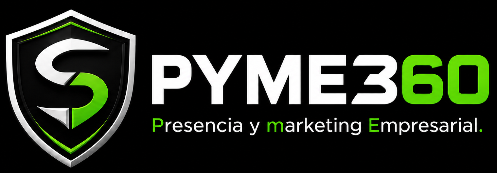

Auditoría rápida
Analizamos qué falla
- Miramos tus fugas hacia Booking y OTAs.
- Detectamos la fricción que frena reservas en móvil.
- 3–5 observaciones claras sin tecnicismos.

Ni te vendemos software ni te dejamos solo con informes: nos sentamos contigo a mejorar tus servicios y a vender mejor mes a mes.
No pierdas más energía y realiza tu autoevaluación
Analizamos qué falla
Ponemos en valor tu producto
Reserva directa ágil
Acompañamiento continuo
Sustituye la consulta a ciegas por un diagnóstico de estado claro. Responde 14 preguntas sobre las 7 P del marketing mix y obtén al instante tu resultado en pantalla, con tus áreas más trabajadas y tus dos prioridades de mejora.
Paso 1 · Tu autoevaluación
Paso 2 · Puntuación en pantalla
Paso 3 · Dónde frenar fugas
Paso 4 · Sin compromiso
Estos datos no puntúan. Nos permiten adaptar la terminología de las preguntas al tipo de alojamiento que gestionas.
Evalúa la claridad de lo que ofreces y a quién buscas atraer en cada momento del año.
Tener claro si buscas parejas, familias, grupos o nómadas según las fechas del año.
Singularidad del espacio, comodidades específicas o motivos claros para elegirte frente a otras opciones.
Evalúa el control sobre tus tarifas y el margen neto que te queda tras comisiones.
Estructura planificada de precios, estancias mínimas y variaciones según ocupación.
Cálculo de comisiones de OTAs, pasarelas de pago y gastos de gestión asociados a cada reserva.
Evalúa cómo seleccionas tus puntos de venta y la coordinación de tus calendarios.
Presencia selectiva en portales y venta directa coherente con el perfil de tus clientes.
Sincronización fluida para evitar reservas duplicadas, discrepancias de tarifas o bloqueos tardíos.
Evalúa tus iniciativas para generar demanda y comprobar qué acciones dan resultado.
Campañas anticipadas, ofertas específicas o acuerdos locales para dinamizar periodos valle.
Seguimiento de la procedencia de los clientes para saber qué esfuerzos son rentables.
Evalúa el reparto de tareas comerciales y la rapidez de contacto con posibles huéspedes.
Asignación nítida de quién gestiona la web, atiende consultas, actualiza tarifas o responde reseñas.
Control del tiempo medio para contestar mensajes de WhatsApp, correos o peticiones web.
Evalúa el protocolo desde la primera duda hasta la confirmación y la relación tras la estancia.
Pasos estandarizados para informar, formalizar pago, enviar normas y confirmar sin demoras.
Contacto respetuoso posterior para resolver dudas pendientes o invitar a repetir estancia directa.
Evalúa cómo muestras tu alojamiento y si el visitante encuentra todo lo necesario para reservar con confianza.
Material visual fiel a la realidad, sin retoques desorientadores y con detalles del alojamiento y entorno.
Acceso directo a políticas de reserva y dudas frecuentes desde el móvil.
Calculando interpretación...
Autoevaluación orientativa basada en las prácticas que has declarado, no una auditoría comprobada ni un ranking frente a otros alojamientos. Las categorías son internas para orientar tus decisiones.
Un diagnóstico inmediato en pantalla y observaciones prácticas para tu alojamiento. Sin informes eternos de teoría ni llamadas comerciales forzadas.
La autoevaluación es sin compromiso. El informe y la newsletter son opcionales y solo se activan si marcas su casilla.
Podemos comentar en 15 minutos cómo abordar tus dos áreas prioritarias con las herramientas que ya tienes montadas, sin compromiso ni llamadas comerciales forzadas.
Te enviamos por escrito el desglose completo de tus 14 respuestas, el diagnóstico de cada P y observaciones prácticas para tus prioridades. No te suscribiremos a ninguna lista comercial sin tu permiso expreso.
De la autoevaluación a los resultados
No te dejamos solo con un informe ni te obligamos a contratar personal ni comprar software. Como tu equipo comercial externo, nos sentamos contigo a ejecutar cada mejora para frenar fugas hacia Booking, poner en valor tu producto y blindar tu margen neto.
Diagnóstico vs. Solución
No se trata de trabajar más horas ni de comprar software innecesario. Se trata de frenar las fugas que te cuestan dinero y poner tu comercialización en marcha.
Pagas un 15%–22% a las OTAs por huéspedes que ya te conocían o buscaban tu marca.
Tu alojamiento es único, pero las fotos y tarifas no lo reflejan y compites por precio.
El viajero entra desde el móvil, el motor pide demasiados pasos y salta a Booking.
Noches vacías entre semana o meses valle sin ninguna campaña ni ofertas empaquetadas.
Recuperamos reservas de marca para tu canal directo, frenando comisiones.
Tarifas rentables y fotos cuidadas que justifican el precio sin regalar noches.
Proceso en 2 clics en móvil y contacto directo por WhatsApp para cerrar reservas.
Estrategia continua mes a mes para llenar huecos de baja temporada.
Nuestras soluciones
No venimos a venderte tecnología nueva ni a complicarte el día a día. Nos coordinamos con las personas y proveedores que ya trabajan contigo para ordenar tu comercialización con acciones que se notan en caja.
Por tipología de alojamiento
Una casa rural independiente no tiene las mismas necesidades que un complejo multiunidad o un hotel rural. Adaptamos el trabajo a tu realidad operativa.
Ejemplos reales de revisión
No son teorías de marketing. Son detalles concretos que pueden afectar a la percepción del producto, la confianza, el contacto o la reserva directa.

Fotos oscuras de móvil, descripciones planas o no destacar elementos que disparan el precio medio y la ocupación (un jacuzzi exterior, una terraza con vistas, chimenea o una estancia pensada para parejas).

El huésped ve fotos y descripción, pero no encuentra rápido cómo consultar disponibilidad o qué ventaja tiene reservar directamente en tu web.

Hay buenas reseñas o buen entorno, pero la ficha no está ayudando lo suficiente en el momento crítico de decisión.

Ubicación, servicios, normas, precios, contacto o disponibilidad obligan al usuario a buscar demasiado desde el móvil.

Aunque exista web propia, el huésped acaba reservando por OTA porque el proceso parece más fácil o confiable.

No hay un sistema sencillo para pedir reseña, mantener contacto o facilitar una futura reserva directa para el próximo año.
Dudas normales
Respuestas directas sobre cómo mejorar reservas directas, reducir comisiones de Booking y gestionar tu comercialización sin complicaciones técnicas.
No tiene ningún coste. La autoevaluación en pantalla y el desglose de tus 7 P comerciales son totalmente gratuitos y sin compromiso.
Diseñamos propuestas específicas sin rebajar tarifas en OTAs. Creamos paquetes de estancia temática, activamos venta directa por WhatsApp y lanzamos campañas directas a huéspedes previos o escapadas de proximidad para cubrir días laborables y meses tranquilos.
Auditamos el recorrido exacto del huésped desde su móvil. Si tu motor de reservas tarda más de tres clics o no muestra disponibilidad clara, el viajero vuelve a Booking. Detectamos esos puntos de fricción y abrimos atajos directos para proteger tu margen neto.
Rotundamente no. No somos un software nuevo ni te obligamos a rehacer tu web. Trabajamos sobre las herramientas y el motor que ya tienes montados mejorando su conversión y visibilidad.
No, las plataformas siguen cumpliendo su función de escaparate. El objetivo es equilibrar los canales y no regalar comisiones del 18% al 22% por huéspedes que ya te conocen o buscan directamente el nombre de tu alojamiento.
Presupuesto cerrado sin permanencia obligatoria. Planteamos intervenciones comerciales concretas dimensionadas al número de unidades de tu alojamiento, orientadas a recuperar con reservas directas la inversión realizada.
Cero horas de carga técnica para ti. Nosotros asumimos el análisis comercial y la redacción de las campañas; tú solo validas las acciones y atiendes a tus huéspedes como siempre.
Puedes completar la autoevaluación igualmente. Evaluamos tu producto y presentación fotográfica junto con tus tarifas para abrir una vía rápida de reserva directa mediante WhatsApp o ficha local bien posicionada.
No, respetamos tu ritmo al 100%. Primero ves tus resultados en pantalla y recibes tus notas por escrito si lo solicitas. Solo si ves valor y quieres avanzar agendamos una conversación breve.
Obtienes tu diagnóstico inmediato en pantalla sobre tus 7 P comerciales. Si solicitas el informe detallado o quieres que ejecutemos las mejoras, te planteamos una propuesta aplicada con objetivos claros y precio cerrado.
Comienza completando tu autoevaluación gratuita en 5 minutos o escríbenos directamente por WhatsApp para una primera valoración sin compromiso.